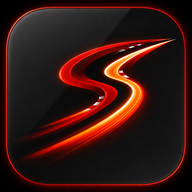

Library & downloads
Pick a weekend, then a session. Every session says what it is before you open it: live, replay ready, downloading, upcoming — and what its data can show (circuit outline or not).
- Bahrain Grand PrixKuala Lumpur · 2–4 OctTHIS WEEKEND
- Azerbaijan Grand PrixBaku · 24–26 Sep
- Spanish Grand PrixMadrid · 11–13 Sep
- Italian Grand PrixMonza · 4–6 Sep
- Dutch Grand PrixZandvoort · 21–23 AugSPRINT
- Hungarian Grand PrixBudapest · 24–26 Jul
- Singapore Grand PrixMarina Bay · 9–11 OctNEXT
- FRI12:30Practice 1Not on this server yetNOT DOWNLOADED
- FRI16:00Practice 2Recorded live · 34 min of 60REPLAY READY
- SAT12:30Practice 3Download in progress — you can keep browsing
- QUEUED
- DOWNLOADING
- FINALIZING
- READY
working · no percentage from the server - SAT16:00QualifyingRecorded live · from the end of Q1REPLAY READY
- SUN15:00RaceLive timing opens when the public feed startsSTARTS IN —
Why: today the library is a three-select popover and the status of a session only appears after choosing it. A list per weekend shows every state at once, and download progress is a stepper because the server reports stages (QUEUED → DOWNLOADING → FINALIZING), not a percentage — a fake progress bar would be invented data.
Opening a session
Loading looks like loading — never like an error. A cold open shows the brand with the truthful phase underneath; once the session is known the rail takes over and the tower shows its shape while the timing arrives. Reconnects never bring the logo back: the last good screen stays, with an amber rail.
1 · Cold open First load only. The highlight runs through the SS while something is actually loading; the line underneath names the real step. Reduced motion: a still mark.
- SESSION FOUND
- LOADING TIMING
- READY
Replaces: “TIMING DATA NOT AVAILABLE” and “OPENING SESSION — Waiting for timing and playback controls”, which read as failures while the replay is simply loading.
Live lifecycle
Every server phase has one rail state and one sentence. Amber means “the screen may be behind”, never “the race is neutralised”.
Live vs replay
Live is red and solid. Replay is grey and outlined, with the progress line under the rail. Controls follow the same rule: live has delay only; replay has the full transport.
Missing data, said plainly
Each capability has one honest fallback. Values that are missing on one row show “—”. A capability that is missing for the whole session removes its element and says why once.
Results
After the flag the story is the result: classification, places gained since the start, fastest lap, penalties and who did not finish. Classification changes after the flag animate as classification, not as passes.
Settings
Fewer, clearer switches. Motion is a first-class setting because the motion carries meaning.
Empty & errors
Say what happened, what still works, and that nothing was made up.
Your replays are safe on the server. Retrying every 10 s.
No sample race has been substituted.This happens between sessions and occasionally during them. We’ll connect as soon as it returns.
Replays still open from the library.Pick a weekend in the library and download a replay, or go live when a session starts.
Downloads use the public timing archive.Testing days and unusual formats open as a plain timing table.
Order and lap times only.Brand & loading
One swappable mark, derived from the provisional Slipstream icon (the SS as two racing lines through an Eau Rouge-style S, with kerbs). It identifies the app; it never competes with race status and is never a connection indicator.

 TV · 40Desktop header · 26Phone top bar · 20
TV · 40Desktop header · 26Phone top bar · 20| Where the mark moves | Cold open only: one highlight sweeping through the SS, repeating while loading, gone the moment the first frame renders. |
|---|---|
| Where it never moves | Header, TV rail, phone top bar; reconnects, stale feed, tab changes, driver changes, TV feature changes. Brand motion is quieter than any race event. |
| Colour | The mark's red-orange matches the approved accent (#ff3d24), so it needs no new UI colours. The glow and gradient stay inside the mark. |
| Swapping the final icon | Replace shared/brand/mark-*.png, tile-*.png and the mask in brand.css. Production: one BrandMark component with size and a static fallback. |